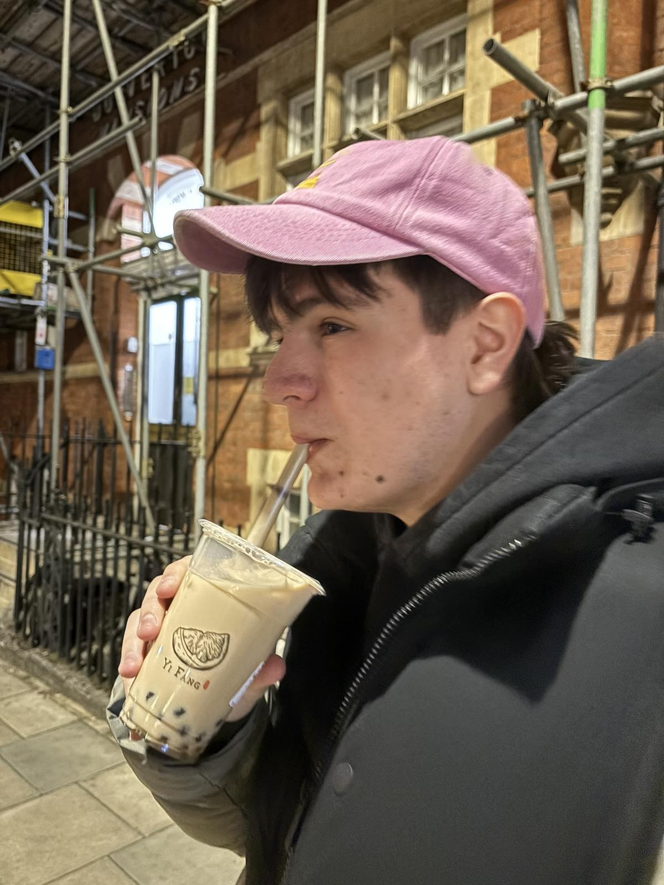

Marko Stefanov
Computer Science student at UCL and software developer in London, building tools that solve real problems.
- London, UK
- UCL Computer Science
- Ex-Arm intern
- Software in production

In Brief
Based in London, I’m a Computer Science student at UCL. I like building software that people actually use, and I’m happiest where algorithms meet real-world constraints.
This summer I interned at Arm on the GPU build team, where I owned three open-source Bazel rulesets for building OS images. Before that, my work took me across web applications, embedded systems and Windows desktop software. Profili uses column generation to cut material waste at ElektroLab; on ReadingStar 2.0 I built the music generation, audio utilities and singing-score system; and UCL Yellow Pages taught me how to ship a secure, multi-user Django app as part of a team.
I enjoy working in teams with real stakeholders. ReadingStar was built with IBM, Intel and the National Autistic Society, and Profili went from a problem on a factory floor to a tool used every day.
Milestones
All projects-
Summer 2026
Interned on Arm’s GPU build team
Owned three open-source Bazel rulesets for building OS images as part of Project Ragnarok.
-
Jan 2026
Presented ReadingStar 2.0 at Bett
Showcased our app to the EdTech industry at the Bett conference in London.
-
In production
Profili deployed at ElektroLab
My pipe-cutting optimiser has been in daily use on the shop floor for over a year.
-
Team project
Built ReadingStar’s music engine
Music generation, audio utilities and singing scoring, with IBM, Intel and the National Autistic Society.
-
Team project
UCL Yellow Pages
A secure, student-only directory built in Django with a team of four.
What I Do
-
01
Web Development
Full-stack web apps with Django and PostgreSQL, from secure authentication and role-based access control to fast, typo-tolerant search.
-
02
Algorithms & Optimisation
Turning hard problems into practical tools, like column generation for the NP-hard cutting-stock problem behind Profili.
-
03
AI & Audio
Running AI models such as Meta’s MusicGen and IBM Granite on-device and on low-spec hardware, plus audio utilities and singing-accuracy scoring.
-
04
Build Systems & Infrastructure
Hermetic Bazel rulesets and GitLab CI from my Arm internship, plus embedded and Windows desktop work built on C, Java and Haskell.
Toolkit
- Languages
- Build & CI
- Web
- AI & audio
- Areas
Have a project in mind?
I’m always happy to talk about software, optimisation or anything on this site.